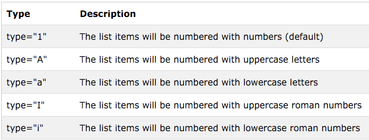

Atividades relacionadas a aula 2
Existem 3 tipos de listas
Listas não numeradas - Unordered Lists <ul>
Listas numeradas (ou listas ordenadas) são estruturas de tópicos numeradas.
Exemplo: Lista de assuntos de aula hoje
- Formatação de textos
- Maneiras de fazer citação
- listas
- HTML semântico
Listas numeradas - Ordered Lists <ol>
Listas numeradas (ou listas ordenadas) são estruturas de tópicos numeradas.
Exemplo: Lista de coisas a fazer hoje
- Devolver o livro de Javascript na biblioteca
- Ligar para a minha orientadora
- Voltar para o Rio
- Procurar a diretora da Incubadora Gênesis

Listas de descrição <dl>
Muito úteis para fazer glossários.
Exemplo:
-
HTML Semântico
-
O HTML semântico tenta transmitir significado através das palavras e as tags em uma página. tente pensar desta maneira: o conteúdo da página são as palavras que você fala. A marcação HTML fornece a estrutura, a entonação, as pausas e até mesmo a aparência do seu rosto. Basicamente, as marcações são a metade da sua mensagem.
- SEO
-
Search Engine Optimization (SEO) é um conjunto de técnicas, métodos e/ou estudos que visam melhorar o posicionamento de suas páginas no mecanismo de busca, ou seja, quando um usuário digita no mecanismo de busca uma palavra-chave, o objetivo do SEO é fazer com que uma (ou várias) das páginas do seu website, apareça entre os primeiros resultados da busca orgânica.
Listas aninhadas
- Hortifruti
- Agrião
- Alface
- Chicória
- Rúcula
- Carnes
- Alcatra
- Patinho
- Fraldinha
- Cereais, Grãos, farinhas
- Arroz
- Feijão
- Aveia
- Farinha de trigo